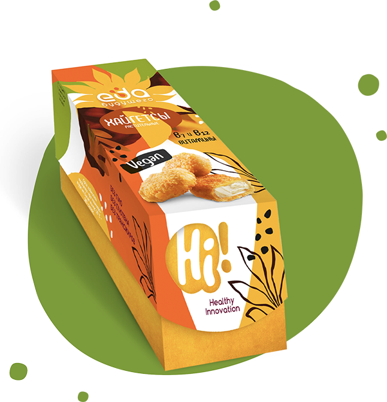
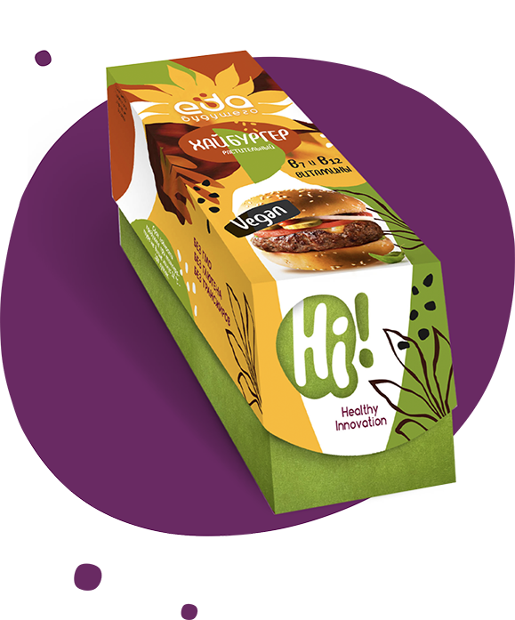

Нас 7,5 миллиардов на планете. Один миллиард всегда голодает, а один — всегда переедает. Создав технологии промышленного производства еды и пытаясь накормить растущее население, мы уничтожаем планету. При этом массовую еду при всем желании трудно назвать здоровой, а полезные продукты доступны только тому небольшому количеству, которое может себе это позволить.
Мы верим в то, что ЕДА БУДУЩЕГО — это такие продукты питания, такая еда, которая будет решать актуальные проблемы экологии и здоровья и будет доступна массовому потребителю.
Мы создали наш клуб с целью объединения тех, кому близка эта идея: ученых, производителей еды, ритейлеров, рестораторов, натрициологов и простых потребителей.
ДА! Мы считаем, что без растительной еды и биотехнологий решить проблему невозможно. И мы верим, что РАСТИТЕЛЬНОЕ МЯСО в нашем рационе, как и другие растительные альтернативы традиционным продуктам питания, — это неотвратимое будущее.
Если вам близки эти идеи, вступайте в наш клуб! Будем ВМЕСТЕ делать нашу планету чище, а еду полезнее и доступнее.
/ Сергей Иванов
Сооснователь «Еда будущего»
Почему растительная еда?
Традиционные мясо и молоко уже давно не те здоровые и органические продукты, которыми питались наши предки. Домашнее животное тогда решало проблему сохранения необходимых для выживания человека аминокислот, по факту было для человека бесплатным «холодильником», в котором не портились полезные вещества. При этом человек находил применение и побочным продуктам животных — использовал шкуру для утепления, кости для различных орудий, а отходы жизнедеятельности — для их корма.
С приходом научно-технического прогресса, сельскохозяйственное животное (курица, свинья, крупный рогатый скот) превратилось в промышленный биологический объект, и сегодняшнее мясо и молоко при всем желании нельзя назвать традиционными продуктами, котороые дают человеку все необходимые для здоровья компоненты.
Правильнее называть современную курицу, свинину и говядину промышленными эквивалентами белков и жиров животного происхождения, выращенных с использованием гормонов роста и антибиотиков, влияние которых на здоровье человека не до конца исследовано, но не имеет ничего общего с пользой.
Человечество потеряло способность к целостному и критичному восприятию культуры питания. Мы видим свою тарелку, но в подавляющем большинстве не думаем, как продукт попадает к нам на стол.
Растительная еда — это естественный ответ зашедшему в тупик промышленному животноводству. Здоровая альтернатива белкам и жирам животного происхождения.
Кому это может быть интересно?
Мы приглашаем всех, кому интересна ЕДА. Вкусная, полезная, здоровая и доступная.
Если вы задаетесь такими вопросами:
Какой будет еда будущего?
Как накормить человечество, сохранив экологию планеты?
Как еду будущего сделать полезной и доступной?
Для нас важны следующие темы:
Экология;
Нутрициология;
Бизнес-модели в создании еды;
Рынки сырья;
Изменение социальной среды.
Если вы интересуетесь такими темами и если вы готовы участвовать в создании ЕДЫ БУДУЩЕГО — вступайте в клуб, будем менять будущее вместе!
Что у нас уже получилось?
Первым вкладом в продуктовую линейку «Еда будущего» мы сделали Hi-бургер со вкусом домашней котлеты.
Для нас было важно создать продукт не для вегетарианцев, а для широкого круга потребителей. Для тех, кто не готов отказываться от мяса, но кому интересно пробовать вкусные новинки.
Мы расшифровали вкус домашней бабушкиной котлеты и воспроизвели его на растительном белке с натуральной ароматикой. У нас получилось подобрать такой состав ингредиентов, что по аминокислотам наш Hi-бургер полностью соответствует рекомендациям ВОЗ. А еще добавили витаминов B7 и B12.
Наша продукция
Котлеты растительные
Хайгетсы растительные

Хайбургер растительный

Идеи, которые приближают нас к мечте.
Будущее еды связано с глубокими инновациями в биотехнологиях.
Мы сотрудничаем со всеми значимыми научно-исследовательскими институтами нашей страны, развиваем контакты с зарубежными партнерами и, главное, опираемся на экспертизу собственного Инновационного Центра «Бирюч».
Растительное мясо — это только первый шаг в развитии продуктовой линейки «Еда будущего».
Нас также интересуют и более инновационные темы, среди них:
Сладкий белок и редкие сахара
Как здоровая альтернатива одному из главных зол в современном рационе. К сожалению, современному человеку, который по сравнению с нашими предками кратно перегружен стрессом, трудно отказаться от сахара. Поэтому мы ведем разработку альтернативы, которая по своим потребительским свойствам сможет полностью заменить сахарозу, а по питательной ценности будет наравне с белком и не будет наносить инсулинового удара.
Низкокалорийные жиры
Жир — важный компонент в ингредиентах продуктов питания, обеспечивающий не только питательную ценность, но и отвечающий за вкус продукта.
Нас интересуют технологии кратного уменьшения калорийности жира с сохранением его вкусовых характеристик, что позволит в разы снизить калорийность любимых продуктов и блюд.
Жиры, полученные биосинтезом из микроорганизмов.
Пальмовое масло — созданный природой уникальный жир, который дает возможность изготавливать растительные аналоги традиционной молочки, производится сегодня с серьезнейшим уроном экологии Юго-Восточной Азии. Вырубаются джунгли, теряется редчайшая фауна. Экологи всего мира бьют тревогу.
Новые технологии производства пальмового масла позволят восстановить природу и перенести производство этого редкого масла из Малайзии и Индонезии прямо в страны-потребители.
Продукция «Зеленой полки»
В супермаркетах Финляндии полка магазина, где продается молочная продукция, разделена на белую и зеленую части. На зеленой продаются растительные аналоги традиционной молочки. Развитие линейки таких продуктов — одно из направлений, в которое мы будем инвестировать.